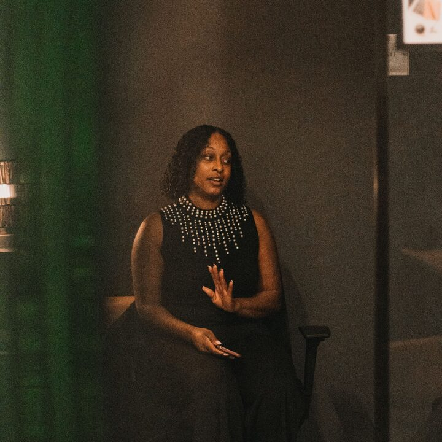

Демо TMS под ваш процесс
TMS помогает не терять заявки и держать продажи под контролем
- Покажем демо на ваших сценариях, а не по шаблону
- 20–30 минут, без оплаты и обязательств
- Сразу разберём, что автоматизировать в первую очередь
AI-ассистент активен
Здравствуйте! Подскажите, задача ещё актуальна?
Да, актуально. Подскажите, какой процесс хотите автоматизировать?
Лиды и сделки — в одном контуре
Последние сделки
Поставка оборудования ₽450K
Разработка сайта ₽450K
Продажа River House ₽450K
Кейсы и интеграции
01
02
03
TMS уже работает в реальных бизнес-сценариях
На демо показываем не абстрактную концепцию, а готовые процессы: входящие заявки, воронку, коммуникации и аналитику команды.
Единый входящий потокСайт, звонки и рекомендации в одном окне
Интеграции без ручной сборкиCRM, телефония и рабочие сервисы
Демо под процесс клиентаПоказываем только релевантные сценарии
20–30 минперсональное демо
Почему лиды теряются
Заявки, сделки и действия менеджеров живут в разных местах — продажи буксуют
Заявки теряются между каналами
Сайт, звонки, мессенджеры и рекомендации живут отдельно — скорость первой реакции падает.
Сделки не видны целиком
Менеджер видит свою карточку, руководитель — часть воронки, общей картины всё равно нет.
Следующий шаг не очевиден
Команда тратит время на разбор, кто что должен сделать, вместо движения сделки к деньгам.
Когда лиды приходят из разных каналов, менеджеры работают в чатах и таблицах, а руководитель собирает картину вручную — бизнес теряет скорость. TMS собирает заявки, сделки, задачи и статусы в один управляемый контур.
01 · Работа с лидами
Быстрая реакцияНовые заявки сразу видны команде
Понятный статусВидно, кто и на каком этапе работает
Следующий шагКаждая заявка движется по процессу
Все входящие заявки — в одном окне
Сайт, звонки и рекомендации попадают в единый список. Менеджер сразу видит источник, статус и следующий шаг — без ручных таблиц.
Входящие заявки4 активные записи
Обновлено сейчас
Алексей Малев
River House
Сайт
Квалифицирован
Анна Соколова
ООО Ромашка
Звонок
В работе
Дмитрий Козлов
СтройТех
Рекомендация
Новый
Мария Иванова
МедиаГрупп
Сайт
Новый
Входящие заявки4 заявки требуют внимания
АМ
Алексей МалевRiver House · Сайт
ГотовАС
Анна СоколоваООО Ромашка · Звонок
В работеДК
Дмитрий КозловСтройТех · Рекомендация
Новый
Что это даёт бизнесу
01
02
03
Не просто CRM, а управляемый рабочий контур для продаж
TMS собирает обращения, фиксирует действия и помогает руководителю видеть ситуацию без ручных сверок.
Быстрее реагировать на лиды
Новые обращения сразу попадают в работу и не теряются между каналами.
Прозрачнее управлять продажами
Воронка, суммы и этапы доступны руководителю в реальном времени.
Снижать операционный шум
AI-подсказки выделяют то, что требует внимания команды сейчас.
Скорость реакции−42%времени до первого контакта
Контроль процесса24/7актуальные статусы команды
Отзывы о работе с TMS
Что меняется после знакомства с системой
Отзывы раскрываются полностью, карусель управляется стрелками и свайпом, а новый отзыв можно добавить через форму.
Гирей РеппГенеральный директор «Резонанс»
В TMS максимально удобная и прозрачная воронка. Чаты с AI-агентом помогают быстрее переводить лиды в клиентов и не терять контекст между касаниями.
Семён СавченкоКоммерческий директор «PapaTime»
AI-агент для анализа звонков помогает быстро видеть недочёты и понимать, где проседает команда. Решения принимаются по фактам, а не по ощущениям.
Анна ВласоваРуководитель отдела продаж
На демо сразу увидели, где теряем скорость и какие действия можно автоматизировать уже на первом этапе. Показ был собран под наш процесс.

Мария ОрловаДиректор по развитию
После настройки руководителю больше не приходится вручную собирать статусы. Вся картина по обращениям и следующим действиям уже перед глазами.
Как проходит демо
Шаг 1
Шаг 2
Шаг 3
Оставляете заявку → согласуем сценарий → показываем систему под ваши задачи
Без длинных созвонов «про всё». Сначала собираем контекст, потом показываем только то, что влияет на вашу команду и продажи.
Оставляете заявку
Заполняете форму и коротко пишете, что хотите автоматизировать в первую очередь.
Готовим сценарий
Уточняем контекст и собираем демо без лишней воды и лишних экранов.
Показываем систему
Показываем реальные интерфейсы, AI-подсказки и точки экономии времени.
FAQ
Частые вопросы перед запросом демо
Коротко отвечаем на вопросы, которые чаще всего влияют на решение оставить заявку.
Что именно покажете на демо?
Покажем лиды, сделки, воронку, аналитику и AI-помощника. Если у вас есть свой сценарий — адаптируем демонстрацию под него.
Нужно ли что-то устанавливать заранее?
Нет. Демо проходит онлайн, а доступ к тестовой CRM можно получить после короткой заявки.
Чем TMS отличается от обычной CRM?
TMS объединяет работу с каналами, сделками, задачами и AI-подсказками в один рабочий контур, а не только хранит карточки клиентов.
Можно ли обсудить наши интеграции и процессы команды?
Да. Перед показом мы уточним ключевые процессы и соберём сценарий под ваши задачи.
Готовы посмотреть систему?
Покажем TMS на ваших бизнес-сценариях
Оставьте имя и телефон — согласуем удобное время и подготовим короткое демо без лишней теории.